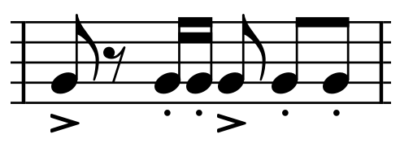

ヴィエルヌ: ピアノ五重奏曲 / ヴァイオリンソナタ
フランク、ヴィドール、ギルマンといったフランスのオルガニストの系譜に連なるヴィエルヌには、やはりそのオルガン曲の録音が多いようだが、作品目録を見るとピアノ曲や室内楽曲、声楽などさまざまなジャンルの作品を残している。今回取り上げるのは、1918年、48歳の作品であるピアノ五重奏曲。第一次大戦で従軍中に命を落とした息子に捧げられている。劇的で厳しい美しさを持つ、フランス近代でも最上級の優れた作品のひとつだと思う。この曲については、フランス語版のWikipediaの記事が詳しい。配信でも数種類の演奏を聴くことができるが、総合的にこれが最も気に入った。
Louis Vierne: Piano Quintet in C Minor, Op. 42
Mūza Rubackytė (pf)
Terpsycordes Quartet
(2015)
第1楽章は、無調性的で晦渋な第1主題が暗い情念のようなものを示すのに対して第2主題はわかりやすく肯定的であり優しい。第2楽章も引き続き重苦しい雰囲気に支配される（前記Wikipediaによると、別のCDライナーノートからの引用で「柩の埋葬を表す」と書かれているが、そこまで具体的なものを思い浮かべる必要はないように思う）。中間にはAgitatoで何かを主張したがっているような、断片的パッセージが挿入される。やがて唐突に、ピアノで奏される3組のffの不協和音によって最終楽章が開始されるが、この楽章に作曲者が与えた熱量の大きさは、そのまま直接的に聴き手の感動に結びつくものといってよいと思う。Allegro molto risolutoの主部は6/8拍子になり八分音符の絶え間ない刻みの上に英雄的・悲劇的な主題が展開される。途中でというリズムの乾いたフレーズが入ってきて非人間的な戦場、戦闘というものを想起させる。
ヴィエルヌの室内楽作品でもう一つ、ヴァイオリンソナタ（イザイに献呈されたもの）の良い演奏があった。ピアノは以前フォーレの夜想曲の回でも取り上げたフランソワ・デュモン。この作品も激しい部分が多く、冒頭のテーマはこれも6/8拍子の鋭い刻みによる、ちょっとスパイ映画を思わせるサスペンスに満ちたものである。第2楽章はフォーレのような静かなアンダンテの途中に突然プロコフィエフ（ピアノソナタ第7番の2楽章）が乱入してきたかの如き和音強打があるのだが、この演奏は容赦ない対比を聴かせる。ほぼ全面的に緊張感に満ちた、弛緩とは無縁の曲であり、その理想的な演奏といえるかと思う。終楽章でピアノが見せる技巧的なトッカータ風・無窮動風の活躍も心地よい。ピアノ五重奏曲とも共通する、作曲者の強靭な意志が浮彫となったような名品である。
Louis Vierne: Violin Sonata in G Minor, Op. 23
Elsa Grether (vn)
François Dumont (pf)
(2015)
(May 6, 2023)